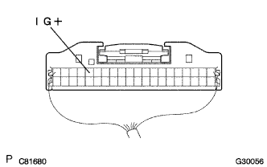

SRSエアバッグシステム ウォーニングランプ不灯 |

| 手順1 | 電源電圧点検 |
SST(トヨタエレクトリカルテスター)を使用して、バッテリーの電圧を点検する。
|
| ||||
| OK | |
| 手順2 | ワイヤハーネス点検（コンビネーションメータＡＳＳＹ-バッテリー間） |
|  |
バッテリーのマイナスターミナルを接続し、IGスイッチをONにする。
SST(トヨタエレクトリカルテスター)を使用して、コンビネーシヨンメータASSYに接続されているコネクタのIG+端子-ボデーアース間の電圧を点検する。
|
| ||||
| OK | |
| 手順3 | エアバッグウォーニングランプ点検 |
IGスイッチをOFF(LOCK)にする。
バッテリーのマイナスターミナルを切り離し、90秒間待機する。
エアバッグセンサASSY CTRからコネクタを切り離す。
バッテリーのマイナスターミナルを接続する。
IGスイッチをONにして、コンビネーシヨンメータASSY内のエアバッグウォーニングランプの点灯状態を点検する。
|
| ||||
|
| ||||
| 手順4 | コンビネーションメータASSY点検 |
IGスイッチをOFF(LOCK)にする。
バッテリーのマイナスターミナルを切り離し、90秒間待機する。
バッテリーのマイナスターミナルを接続し、IGスイッチをONにして60秒間待機する。
SSTを使用してダイアグコードを消去後、再度ダイアグコードを点検する。
ウォーニングランプによるコード読み取りの場合
TaSCANによるコード読み取りの場合
|
| ||||
| OK | ||
| ||